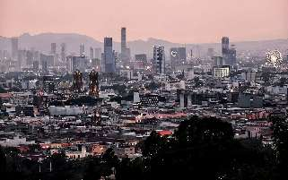

About Me

Hello every one, my name is Jose Luis Izelo Mabarak from Puebla, Mexico, I am In a full time Service Mission in the church, I also like play the piano and build things like legos, I realy whant to learn more about programation. In this BYU Patway program and I am very excited for learn new things.
Puebla Mexico
Puebla, officially the Free and Sovereign State of Puebla, is one of the 31 states that, along with Mexico City, comprise the Federal Entities of Mexico. It is divided into 217 municipalities and its capital is Puebla City. Part of east-central Mexico, it is bordered by the states of Veracruz to the north and east, Hidalgo, México, Tlaxcala and Morelos to the west, and Guerrero and Oaxaca to the south. Today, the state is one of the most industrialized in the country, but since most of its development is concentrated in Puebla and other cities, many of its rural areas are undeveloped.